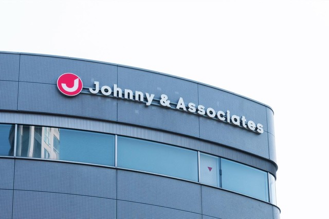

イスラエル最悪の民間人虐殺
パレスチナ自治区ガザを実行支配するイスラム組織ハマスが10月7日、電撃的なイスラエル攻撃を敢行、市民ら約700人が死亡した。イスラエル軍も空爆などで猛反撃、ガザ侵攻が切迫する全面戦争の情勢に。ユダヤ人にこれほどの犠牲が出るのは1973年の第4次中東戦争以来とみられる。
なぜ気になったか
テレビで毎日放送されていて興味を持ったから。
どう考えるか
どちらの言い分も理解できるため、どうにかして和解し共存できないかと考えた。
パレスチナ自治区ガザを実行支配するイスラム組織ハマスが10月7日、電撃的なイスラエル攻撃を敢行、市民ら約700人が死亡した。イスラエル軍も空爆などで猛反撃、ガザ侵攻が切迫する全面戦争の情勢に。ユダヤ人にこれほどの犠牲が出るのは1973年の第4次中東戦争以来とみられる。
テレビで毎日放送されていて興味を持ったから。
どちらの言い分も理解できるため、どうにかして和解し共存できないかと考えた。

ジャニーズ事務所の創業者、故ジャニー喜多川氏による性加害問題で、ジャニーズ事務所は17日、社名を「SMILE―UP.」に変更した。日付が変わった午前0時に事務所の公式サイトは移転。新サイトに、新しい社名が表記されていた。また関連のサイトや、動画配信サービスのアカウントなどからも次々と「ジャニーズ」の表記が消えた。
聞きなれていたジャニーズという名称が変わることに衝撃を受けたから。
社名が変わるのは残念だが、被害者のことを考えると適切な判断だと考えた。